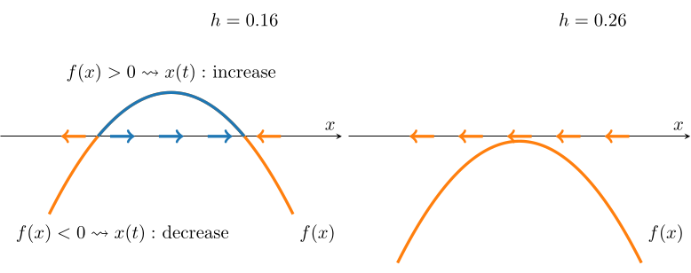
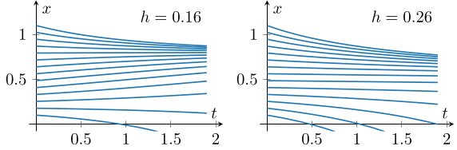
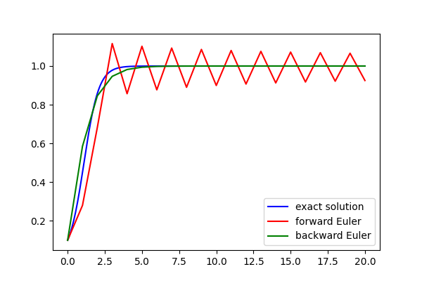
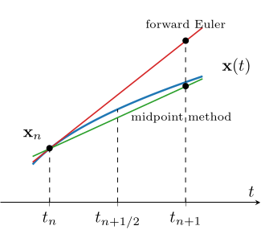
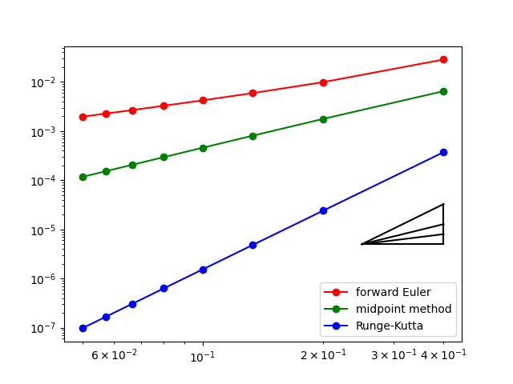
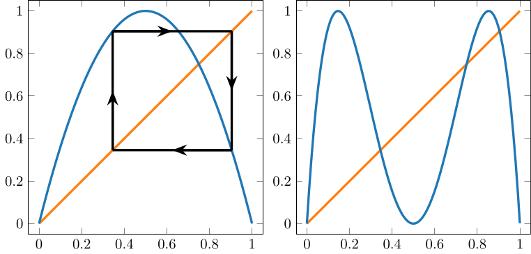

1. 力学系の概要と数値計算
まずは連続力学系と離散力学系それぞれについて, 簡単な例を通じて解の挙動を観察してみよう. また, 連続力学系に対する数値計算手法をいくつか紹介し, 後の複雑な連続力学系に対する数値計算のための準備を行う.
1.1: 一次元力学系
ここでは力学系の抽象的な定義を述べ, 簡単な具体例として 一次元力学系 をいくつか確認してみよう. はじめに において, 常微分方程式によって与えられる連続力学系と, 写像の反復によって与えられる離散力学系を紹介した. これらは『時間経過による状態の変化を表す写像の族』という共通の構造を持つ.
$X$ を相空間とする.
- 時間発展写像 $\Phi_t: X\to X$ について, \[ \Phi(t,\mathbf{x}) = \Phi_t(\mathbf{x}) \] により定まる写像 $\Phi:\mathbb{R}\times X\to X$ が連続であり, また $\Phi_t$ たちが \[ \left\{\begin{array}{rl} \Phi_0 &= \operatorname{id}_X, \cr \Phi_{t+s} &= \Phi_t\circ\Phi_s \end{array}\right. \] を満たすとき, $\{\Phi_t\}_{t\in\mathbb{R}}$ を フロー といい, これが定める時間発展を 連続力学系 という.
- 写像 $F: X\to X$ に対し, $\{F^n\}_{n\in\mathbb{N}}$ が定める時間発展を 離散力学系 という.
ただし, 写像 $F: X\to X$ に対し \[ F^n = \underbrace{F\circ F\circ \dots \circ F}_{\text{$n$ 個}} \] であり, 従って $F^{n + m} = F^n\circ F^m$ である. もし $F$ が可逆であれば、$F^{-1}$ を用いて $F^n$ を $n\in\mathbb Z$ に拡張できる. この場合, 離散力学系を定める $\{F^n\}_{n\in\mathbb{Z}}$ は, 連続力学系のフローとより完全に対応する.
上では連続力学系と離散力学系を時間発展写像の観点から定義している. この定義に基づき, 例えば常微分方程式 (系), 偏微分方程式 (系) 以外にも, 遅延微分方程式 や evolution inclusion など, 様々な形で記述されるシステムを力学系と解釈できる. 本資料では, しばらくは連続力学系として, 時間大域的な解が一意に存在する 常微分方程式系 \[ \left\{\begin{array}{rl} \mathbf{x}' &= \mathbf{f}(\mathbf{x}) \cr \mathbf{x}(0) &= \mathbf{x}_0 \end{array}\right. \] によって生成される自励系のみを扱うことにする.
簡単な例として, \[ \left\{\begin{array}{rl} x' &= ax \cr x(0) &= x_0\in\mathbb{R} \end{array}\right. \] を考える, ただし $a\in\mathbb{R}$ は定数とする. これは時間大域的なただ一つの解 $x(t) = e^{at}x_0$ を持つため, \[ \Phi_t(x_0) = e^{at}x_0 \] により定められる時間発展写像 $\Phi_t: \mathbb{R}\to \mathbb{R}$ の族は確かにフローとなる.
なお, 相空間が $\mathbb{R}$ である力学系は 一次元力学系 と呼ばれる.
連続力学系の解は時間経過により相空間上を動く点とみなせるため, アニメーションとして表示することも可能である. とはいえ, 一次元の場合は横軸を時刻 $t$ として解 $x(t)$ のグラフをプロットするのが分かりやすいだろう. 上の例について, いくつかのパラメータ $a\in\mathbb{R}$ に対する, いくつかの初期値に対する解のプロットを掲載する.

この例では, パラメータ $a$ によって解の挙動が大きく異なっている. このように, パラメータの変化に伴って力学系の定性的な性質が変化する現象を 分岐 (bifurcation) という. 分岐については後に改めて説明する.
次に, 一次元離散力学系の簡単な例として \[ x_{n+1} = ax_n \] を考える, ただし $a\neq 0$ は定数とする. ここで, $F(x) = ax$ により写像 $F: \mathbb{R}\to\mathbb{R}$ を定めると, 上は確かに $\{F^n\}_{n\in\mathbb{Z}}$ が定める離散力学系である. 実際, $x_n = F^n(x_0) = a^n x_0$ であることは簡単にわかる.
上で挙げた連続力学系と離散力学系は, 右辺が同様の形をしているものの解の挙動は大きく異なる (例えば $a\lt 0$ の場合などが分かりやすい). 連続力学系を一定の時間間隔ごとに取り出して離散力学系が得られるという関係性はフローに対するものであって, 方程式の形の類似性とは別の話である.
上に挙げた連続力学系と離散力学系の例は, どちらも右辺が \[ f(x) = ax \] であった. この $f$ は \[ f(c_1x + c_2y) = c_1f(x) + c_2f(y) \quad \forall x, y, c_1, c_2\in\mathbb{R} \] を満たすため 線形写像 であるが, このように線型写像により表される力学系は 線形力学系 と呼ばれる.
一方で, この資料では 非線形力学系 も扱いたい. 次は, 一次元非線形力学系の例を確認してみよう.
右辺が非線形になる常微分方程式の例として, ロジスティック方程式 \[ \left\{\begin{array}{rl} x' &= ax(1-x) \cr x(0) &= x_0 \end{array}\right. \] を考えてみよう, ただしここでは簡単のため $a\gt 0$ とする. まず, $x_0 = 0, 1$ の場合は明らかに $x(t) \equiv 0, 1$ である. 次に, $x_0\neq 0, 1$ の場合は, 変数分離により形式的に \[ \int \dfrac{1}{ax(1-x)}~dx = \int~dt \] となり, 両辺をそれぞれ計算することで \[ \begin{array}{rl} t + C &= -\dfrac{1}{a}\displaystyle\int\left(\dfrac{1}{x-1} - \dfrac{1}{x}\right)~dx \cr &= -\dfrac{1}{a} \log\left|1-\dfrac{1}{x}\right| \end{array} \] が得られる. 初期条件より積分定数 $C$ の任意性を排除できて \[ t - \dfrac{1}{a}\log\left|1-\dfrac{1}{x_0}\right| = -\dfrac{1}{a}\log\left|1-\dfrac{1}{x}\right| \] となるため, 整理して \[ x(t) = \dfrac{1}{1-(1-1/x_0)e^{-at}}\qquad (x_0 \neq 0, 1) \] と解を得ることもできる (なお, $x_0\lt 0$ の場合は \[ e^{-aT} = \dfrac{1}{1-1/x_0} \] を満たす時刻 $T$ で解が爆発するため, 解を $t\to\infty$ まで延長できない).
一般には解を明示的に求めること無く, 与えられた初期値に対する解の挙動を調べたい. 例えばこの問題に対しては, $x' = f(x)$ の右辺 \[ f(x) = ax(1-x) \] の符号が正となる $x(t)$ に対し $x'\gt 0$ が成立することに注目すると, $t$ の増加に伴い $x(t)$ は増加することがわかる. 逆に $f(x)$ の符号が負ならば $x(t)$ は減少する.
例として $a=1$ の場合を考えると, $x(t)$ に対する $f(x)$ の符号は下図左のようになっているため, 数直線上の点 $x(t)$ の時間経過により図中の矢印の向きに動くと説明できる. 実際に, ($a=1$ のときに) いくつかの初期値に対して, 手計算で求めた解をプロットしたものが下図右であり, 確かに左図の矢印により, $x(t)$ の時間経過による増減が説明できている.

例えば, 初期値が $x_0\gt 0$ を満たすならばロジスティック方程式の解 $x(t)$ は \[ \lim_{t\to\infty}x(t) = 1 \] を満たす, という程度であれば (解を明示的に求めること無く) 左の図の矢印の向きだけから読み取ることができる. このような考え方は, 力学系の解の挙動を調べる際に重要なものである.
常微分方程式 \[ \left\{\begin{array}{rl} x' &= x(1-x) - h \cr x(0) &= x_0 \end{array}\right. \] について, $h\lt 1/4$ の場合と $h\gt 1/4$ の場合それぞれに解 $x(t)$ の $t$ を大きくした際の挙動を説明せよ.
右辺を $f(x)$ とおくと, この $f(x)$ の符号を調べることで, 点 $x(t)$ の時間経過による増減を判断できる. 実際に計算すると, $h\lt 1/4$ ならば \[ 1/2-\sqrt{1/4-h}\lt x(t)\lt 1/2+\sqrt{1/4-h} \] を満たす点 $x(t)$ は時間経過により増加, そうでなければ減少する. 一方, $h\gt 1/4$ なら全ての $x(t)$ は時間経過で減少する (下図参照).

この図から, $h\lt 1/4$ のときは $1/2-\sqrt{1/4-h}\lt x_0$ ならば $x(t) \to 1/2+\sqrt{1/4-h}$ であり, そうでなければ $x(t)\to -\infty$ であることがわかる. 一方で, $h\gt 1/4$ のときは全ての初期値 $x_0$ に対して $x(t)\to -\infty$ となる.
この問題については, 上と同様に変数分離を用いて解を手計算で得ることもできる. 実際に, いくつかの初期値に対する解の様子をプロットした図を以下に掲載する:

ここでは一次元非線形離散力学系の例として, ロジスティック写像 \[ x_{n+1} = ax_n(1-x_n) \] を考える, ただし簡単のために $0\lt a\lt 4$ とし, また初期値は $0\lt x_0\lt 1$ であるとする. この解 $x_n$ に対して $n\to\infty$ としたときの挙動は, 以下のように説明することができる:
- $0\lt a\lt 1$ のとき, 帰納的に任意の $n=0, 1, \dots$ に対し \[ 0\lt x_{n+1} = ax_n(1-x_n) \lt ax_n \lt x_n \lt 1 \] であることが示される. 点列 $\{x_n\}$ は単調に減少し, 特に $0\lt x_n \lt a^n x_0$ であることから, 挟み撃ちの原理より \[ \lim_{n\to\infty}x_n = 0 \] となる.
- $1\lt a$ のとき, $0\lt 1-a^{-1}\lt 1$ であることに注意すれば,
- $0\lt x_n \lt 1-a^{-1}$ ならば \[ x_{n+1} \gt ax_n(1-(1-a^{-1})) = x_n \] となる.
- $1-a^{-1}\lt x_n\lt 1$ ならば同様にして $x_{n+1} \lt x_n$ となることがわかる.
- $a$ の値や初期値によっては, 点列 $\{x_n\}$ が $1-a^{-1}$ の前後を往復する挙動が現れることもある.
- 実は $1\lt a\lt 3$ のときは $x_n\to 1-a^{-1}$ となるのだが, $a\gt 3$ のときは点列 $\{x_n\}$ は収束しなくなってしまう.
以下に, いくつかの $a$ に対するロジスティック写像の計算の様子を図示したものを掲載する. それぞれ, 横軸が $n$, 縦軸が $x_n$ の値を表しており, 上で説明したような挙動を観察できる.

上では一次元離散力学系の解を, 一次元連続力学系の解と同様にプロットしたが, 一方で グラフ反復法 もしくは クモの巣図法 と呼ばれる方法で一次元離散力学系の解の挙動を説明することも多い:
一次元離散力学系 $x_{n+1} = F(x_n)$ に対し, 横軸を $x_n$, 縦軸を $x_{n+1}$ として $x_{n+1} = F(x_n)$ のグラフと $x_{n+1} = x_n$ のグラフをプロットする. このとき:
- 与えられた $x_n$ に対し, $x_n$ を表す点 $(x_n, x_n)$ から垂直に引いた線と $x_{n+1} = F(x_n)$ のプロットとの交点は $(x_n, F(x_n))$, つまり $(x_n, x_{n+1})$ である.
- 得られた交点 $(x_n, x_{n+1})$ から水平に引いた線と $x_{n+1} = x_n$ のプロットとの交点は $(x_{n+1}, x_{n+1})$ である. この点が $x_{n+1}$ を表す.
この手順を $n=0$ から繰り返すことで, 一次元離散力学系の解の挙動を表す方法を グラフ反復法 (もしくは クモの巣図法) という. なお, 英語ではこの手順で得られる図を cobweb plot と呼ぶことがある.
実際に, $a = 1.2, 2.8, 3.6$ のときにロジスティック写像の解の挙動をグラフ反復法により表現した図を下に掲載する. 青い線は $x_{n+1} = F(x_n)$, オレンジの線は $x_{n+1} = x_n$ を表しており, 黒い線がグラフ反復法の手順の中で得られる垂直な線および水平な線である. 青とオレンジの線の交点は $x=0, 1-a^{-1}$ を表しており, 左 ($a=1.2$) と中央 ($a=2.8$) は確かに $x_n\to 1-a^{-1}$ となる様子を表している. 一方で, 右 ($a=3.6$) は黒い線が交点の周辺を回り続けており, 点列 $\{x_n\}$ が収束しない様子を確認できる.

離散力学系は比較的容易に (例えば一次元であっても) 複雑な解の挙動を表現できるという特徴がある. また, 連続力学系の解を特定の時刻ごとに取り出すことで, 連続力学系の解の挙動を離散力学系に対応付けて調べることができる (このアイデアは後に ポアンカレ写像 として改めて紹介する). この資料では主に常微分方程式系を対象に議論を進めることにするが, その場合でも対応する離散力学系を考えることは, しばしば重要なテクニックとなる.
1.2: 時間離散化
常微分方程式により与えられる連続力学系を離散力学系と対応付ける方法の一つとして, 先ほどはポアンカレ写像について名前だけ言及した. ここでは常微分方程式の解を近似的に求める方法である 時間離散化, 特に オイラー法 と ルンゲ=クッタ法 による時間離散化について解説し, これらを離散力学系とみなす解釈を導入する.
常微分方程式系 \[ \left\{\begin{array}{rl} \mathbf{x}' &= \mathbf{f}(\mathbf{x}), \cr \mathbf{x}(0) &= \mathbf{x}_0 \end{array}\right. \] に対して, 連続的な時刻 $t$ における解 $\mathbf{x}(t)$ の代わりに, 時間刻み $\tau\gt 0$ を用いて \[ t_n = n\tau \qquad (n=0, 1, \dots) \] と表される 離散的 な時刻における解 $\mathbf{x}(t_n)$ の近似 $\mathbf{x}_n$ を求めたい. その際には, 時間変数 $t$ に関する微分 \[ \mathbf{x}'(t_n) = \lim_{h\to 0}\dfrac{\mathbf{x}(t_n+h) - \mathbf{x}(t_n)}{h} \] を $\{\mathbf{x}_n\}$ を用いた式で近似することで, 常微分方程式系に対する近似問題を導出することになる. このようにして近似問題を導出し, 近似解 $\mathbf{x}_n \approx \mathbf{x}(t_n)$ を定める操作を 時間離散化 と呼ぶ.
例えば時間刻み $\tau\gt 0$ に対する 前進差分商 により \[ \mathbf{x}'(t_n) \approx \dfrac{\mathbf{x}(t_{n} + \tau) - \mathbf{x}(t_n)}{\tau} \] という近似を用いてみよう. さらに $\mathbf{x}_n\approx \mathbf{x}(t_n)$ という近似を用いることで, 常微分方程式に対して \[ \dfrac{\mathbf{x}_{n+1} - \mathbf{x}_n}{\tau} = \mathbf{f}(\mathbf{x}_n) \] という近似問題を導出することができるが, これは 前進オイラー法 (forward Euler method) もしくは 陽的オイラー法 (explicit Euler method) と呼ばれる. 一方で 後退差分商 により \[ \mathbf{x}'(t_n) \approx \dfrac{\mathbf{x}(t_n) - \mathbf{x}(t_{n} - \tau)}{\tau} \] という近似に基づき (添え字を一つずらして) \[ \dfrac{\mathbf{x}_{n+1} - \mathbf{x}_n}{\tau} = \mathbf{f}(\mathbf{x}_{n+1}) \] という近似問題を導出することもできるが, これは 後退オイラー法 (backward Euler method) もしくは 陰的オイラー法 (implicit Euler method) と呼ばれる.
ここまでを定義として整理しておこう:
常微分方程式系 \[ \left\{\begin{array}{rl} \mathbf{x}' &= \mathbf{f}(\mathbf{x}), \cr \mathbf{x}(0) &= \mathbf{x}_0 \end{array}\right. \] を考える. また, 時間刻み幅を $\tau\gt 0$ とし, $t_n = n\tau$ とする.
- 近似解 $\mathbf{x}_n \approx \mathbf{x}(t_n)$ を \[ \dfrac{\mathbf{x}_{n+1} - \mathbf{x}_n}{\tau} = \mathbf{f}(\mathbf{x}_n) \] により定める時間離散化を 前進オイラー法 (forward Euler method) もしくは 陽的オイラー法 (explicit Euler method) という.
- 近似解 $\mathbf{x}_n \approx \mathbf{x}(t_n)$ を \[ \dfrac{\mathbf{x}_{n+1} - \mathbf{x}_n}{\tau} = \mathbf{f}(\mathbf{x}_{n+1}) \] により定める時間離散化を 後退オイラー法 (backward Euler method) もしくは 陰的オイラー法 (implicit Euler method) という.
ここでは, ロジスティック方程式 \[ \left\{\begin{array}{rl} x' &= ax(1-x) \cr x(0) &= x_0 \end{array}\right. \] の解 \[ x(t) = \dfrac{1}{1-(1-1/x_0)e^{-at}}\qquad (x_0 \neq 0, 1) \] と, オイラー法により得られる近似解とを比較してみよう. ただし, ここでは $a=2$ とし, また初期値は $x_0 = 0.1$ を用いることにする. さらに, オイラー法においては時間刻み幅は $\tau=1.0$ とし, $x_n$ の値を $n = 0, 1, \dots, 20$ まで数値計算で求めることにする.
前進オイラー法, 後退オイラー法を用いると, 与えられた $x_n$ に対し, それぞれ \[ \dfrac{x_{n+1} - x_n}{\tau} = ax_n(1-x_n),\qquad \dfrac{x_{n+1} - x_n}{\tau} = ax_{n+1}(1-x_{n+1}) \] を満たす $x_{n+1}$ を求めることになる. 特に前進オイラー法は \[ x_{n+1} = x_n + a\tau x_n(1-x_n) \] を計算すれば良い. 一方, 後退オイラー法については, 今回は $2$ 次方程式 \[ a\tau x_{n+1}^2 + (1-a\tau)x_{n+1} - x_n = 0 \] の $2$ つの根の内 \[ x_{n+1} = \dfrac{a\tau -1 + \sqrt{(1-a\tau)^2 + 4a\tau x_n}}{2a\tau} \] を選ぶことにする.

数値計算結果と厳密解の比較を上に掲載する. なお, オイラー法による計算結果は $(t_n, x_n)$ という点列と見なすことができるが, 上の図では横軸を $t$, 縦軸を $x$ として, この点列を折れ線関数 (区分的線形関数) としてプロットしている. 今回の設定では $\tau\gt 0$ が大きいため (より正確には $a\tau$ が大きいため), 前進オイラー法による近似解には不自然な振動が現れる. 一方で, 後退オイラー法では, 大きな $\tau$ を用いても厳密解の挙動をある程度再現する近似解が得られていることがわかる.
一般に, 自励系 $\mathbf{x}' = \mathbf{f}(\mathbf{x})$ に対する前進オイラー法では, 与えられた $\mathbf{x}_n$ から $\mathbf{x}_{n+1}$ を求める際に \[ \mathbf{x}_{n+1} = \underbrace{\mathbf{x}_n + \tau\mathbf{f}(\mathbf{x}_n)}_{=F_{\tau}(\mathbf{x}_n)} \] と 陽的 に計算可能である (例えば方程式を解いたりする必要がない). 前進オイラー法が陽的オイラー法とも呼ばれるのはこのためである. また, 上の式の右辺を $F_{\tau}(\mathbf{x}_n)$ とおくと, 前進オイラー法は $\mathbf{x}_{n+1} = F_{\tau}(\mathbf{x}_n)$ という離散力学系であると思うことができる.
後退オイラー法では, $\mathbf{x}_{n+1}$ を求めるために方程式を解くなど 陰的 な計算が必要があり手間である (数値計算では, 例えば ニュートン法 が利用されることが多い). 一方, 上の例のように後退オイラー法は前進オイラー法よりも 安定 になりやすいことが知られている (安定性については後の章で改めて解説する). なお, 与えられた $\mathbf{x}_n$ に対し $\mathbf{x}_{n+1}$ を対応させる写像 $F_{\tau}$ を適切に構成できれば, やはり後退オイラー法も $\mathbf{x}_{n+1} = F_{\tau}(\mathbf{x}_n)$ という離散力学系であると思うことができる.
時間離散化は通常, 常微分方程式の解を数値的に近似する手法として導入されるが, 力学系の観点からは, 時間離散化によって得られる \[ \mathbf{x}_{n+1} = F_{\tau}(\mathbf{x}_n) \] を離散力学系と解釈することができる. この解釈により, 上の例のような数値計算結果 (例えば前進オイラー法の結果に見られる振動) を, 離散力学系に関する議論を用いて説明することができるようになるため, 後に説明する力学系の諸性質は数値計算においても重要な概念である.
ここまでに紹介したオイラー法は, 常微分方程式の時間離散化として最も単純な方法の一つであり, 時刻 $t_n$ から $t_{n+1}$ における解の変化を, 時刻 $t_n$ もしくは $t_{n+1}$ における傾き $\mathbf{f}(\mathbf x_n)$ もしくは $\mathbf{f}(\mathbf{x}_{n+1})$ のみを用いて近似している. 一方で, 一つの時間区間 $[t_n, t_{n+1}]$ 内の複数の点で傾きを評価し組み合わせることで, より高精度な近似を得ることも可能である. この考えに基づく代表的な時間離散化が ルンゲ=クッタ法である.
まず, 常微分方程式系 $\mathbf{x}' = \mathbf{f}(\mathbf{x})$ に対する前進オイラー法は \[ \mathbf{x}_{n+1} = \mathbf{x}_n + \tau \mathbf{k}_1,\qquad \mathbf{k}_1 = \mathbf{f}(\mathbf{x}_n) \] を表すことができることに注意しよう. この $\mathbf{k}_1$ は, 時間区間 $[t_n, t_{n+1}]$ における左端点における $\mathbf{x}$ の傾き $\mathbf{x}'(t_n)$ の近似値である. なお, これは \[ \mathbf{x}(t_{n+1}) = \underbrace{\int_{t_n}^{t_{n+1}}\mathbf{x}'(s)~ds}_{\approx \tau\mathbf{x}'(t_n)} + \mathbf{x}(t_n) \] に対する近似であると解釈することもできる.
さて, 上の $\mathbf{k}_1\approx \mathbf{x}'(t_n)$ の代わりに, 時間区間 $[t_n, t_{n+1}]$ の中点における傾きの近似値 $\mathbf{k}_2\approx\mathbf{x}'(t_{n+1/2})$ を用いてみよう. 具体的には, \[ \mathbf{k}_1 = \mathbf{f}(\mathbf{x}_n),\qquad \mathbf{k}_2 = \mathbf{f}\left(\mathbf{x}_n + \dfrac{\tau}{2}\mathbf{k}_1\right) \] と定め, これを用いて \[ \mathbf{x}_{n+1} = \mathbf{x}_n + \tau\mathbf{k}_2 \] を求める. この方法は 陽的中点法 (explicit midpoint method) と呼ばれる, ルンゲ=クッタ法の一種である. 陽的中点法も, やはり \[ \mathbf{x}(t_{n+1}) = \underbrace{\int_{t_n}^{t_{n+1}}\mathbf{x}'(s)~ds}_{\approx \tau\mathbf{x}'(t_{n+1/2})} + \mathbf{x}(t_n) \] に対する近似であると解釈することができる. さらに, $\mathbf{x}_n + \tau\mathbf{k}_2$ を $F_{\tau}(\mathbf{x}_n)$ とみなせば, これも離散力学系を定めていると解釈できる.

このアイデアをさらに発展させることで, 古典的 $4$ 段陽的ルンゲ=クッタ法 が得られる (これを単に ルンゲ=クッタ法 と呼ぶことも多い): \[ \mathbf{x}_{n+1} = \mathbf{x}_n + \dfrac{\tau}{6}\left(\mathbf{k}_1 + 2\mathbf{k}_2 + 2\mathbf{k}_3 + \mathbf{k}_4\right), \] ここで \[ \begin{array}{rll} \mathbf{k}_1 &= \mathbf{f}(\mathbf{x}_n) &\approx \mathbf{x}'(t_n), \cr \mathbf{k}_2 &= \mathbf{f}\left(\mathbf{x}_n + \dfrac{\tau}{2}\mathbf{k}_1\right) &\approx \mathbf{x}'(t_{n+1/2}), \cr \mathbf{k}_3 &= \mathbf{f}\left(\mathbf{x}_n + \dfrac{\tau}{2}\mathbf{k}_2\right) &\approx \mathbf{x}'(t_{n+1/2}), \cr \mathbf{k}_4 &= \mathbf{f}(\mathbf{x}_n + \tau\mathbf{k}_3) &\approx \mathbf{x}'(t_{n+1}) \end{array} \] である. これは数値積分におけるシンプソン則を用いた \[ \mathbf{x}(t_{n+1}) = \int_{t_n}^{t_{n+1}}\mathbf{x}'(s)~ds + \mathbf{x}(t_n) \approx \mathbf{x}_n + \dfrac{\tau}{6}\left(\mathbf{x}'(t_n) + 4\mathbf{x}'(t_{n+1/2}) + \mathbf{x}'(t_{n+1})\right) \] という式に類似したものと思うことができる. さらに, このルンゲ=クッタ法による時間離散化も, やはり離散力学系を定めている.
ロジスティック方程式 \[ \left\{\begin{array}{rl} x' &= ax(1-x) \cr x(0) &= x_0 \end{array}\right. \] に対し, 陽的オイラー法と陽的中点法, $4$ 段陽的ルンゲ=クッタを比較してみよう. ここでは, $a=2$, $x_0=0.1$ に対し, 時間刻み幅としていくつかの $\tau\gt 0$ の値を用いて時刻 $T=2.0$ での近似解 $x_N$ を求め, これと厳密解との誤差 \[ e = |x_N - x(T)| \] を観察する. 時間刻み幅 $\tau$ を小さくするほど, それぞれの時間離散化による $1$ ステップの近似が厳密な時間発展に近づくため, 誤差 $e$ は $0$ に近づいていくことが期待されるが, この収束の速さの違いをグラフにプロットする. 横軸を時間刻み幅 $\tau$, 縦軸に誤差 $e$ とした両対数グラフに, 各時間離散化による誤差の計算結果をプロットした結果を掲載する.

ここで重要なのは各線がおおよそ直線になっていることであり, その傾きに注目する (図右下に, 比較のために傾きが $1$, $2$, $4$ の三角形をプロットしている). 例えば $4$ 段陽的ルンゲ=クッタ法を用いた際の誤差のプロットは, 両対数グラフの上でおおよそ傾き $4$ の直線になっているが, これは \[ \log e \approx 4\log \tau + C, \] つまり $e = O(\tau^4)$ であることを意味しており, 時間刻み幅 $\tau$ を $0$ に近づけたとき, 時刻 $T=2.0$ における誤差が $\tau^4$ のオーダーで減少する様子を表している. 同様に, 陽的オイラー法では $e = O(\tau)$ であり, 陽的中点法では $e = O(\tau^2)$ であることも観察することができる.
陽的中点法や $4$ 段陽的ルンゲ=クッタ法は, 一つの時間ステップの中で複数回 $\mathbf f$ を計算することで, オイラー法より高い近似精度を実現できる. しかし, 数値計算法の『良さ』は近似精度だけで決まるわけではない. 時間離散化によって得られる離散力学系が, 元の連続力学系の性質をどの程度再現するかについては, 後に改めて解説する.
1.3: 相空間内の解構造
ここまでに一次元力学系について, 具体例や数値計算を紹介したが, 次に (二次元以上の場合を含む) 力学系の解の挙動を説明する際に有用な概念をいくつか導入する. これらの概念は, 解を明示的に求めることができない非線形力学系の説明にも利用可能なものであるが, 理解を助けるための具体例として解が明示的に表せるものを挙げておこう:
常微分方程式系 \[ \mathbf{x}' = \begin{pmatrix} x' \cr y' \end{pmatrix} = \begin{pmatrix} -y \cr x \end{pmatrix},\qquad \mathbf{x}(0) = \begin{pmatrix} x(0) \cr y(0) \end{pmatrix} = \begin{pmatrix} r\cos\alpha\cr r\sin\alpha \end{pmatrix} \] を考える. この解は \[ \mathbf{x}(t) = \begin{pmatrix} x(t) \cr y(t) \end{pmatrix} = \begin{pmatrix} r\cos(t+\alpha) \cr r\sin(t+\alpha) \end{pmatrix} \] である (実際に代入して確かめることができる). つまり, この連続力学系の解は, 初期値として与えられた点を含む半径 $|r|$ の円周上を半時計周りに動くことがわかる. なお, この常微分方程式の右辺は線形であるため, これは二次元線形力学系である.
それでは, 力学系の解の挙動に関する概念を列挙し解説していこう.
- 自励系 $\mathbf{x}' = \mathbf{f}(\mathbf{x})$ に対し, $\mathbf{f}(\mathbf{x}_*) = \mathbf{0}$ を満たす $\mathbf{x}_*$ を, この自励系の 平衡点 (equilibrium point) という.
- 離散力学系 $\mathbf{x}_{n+1} = F(\mathbf{x}_n)$ に対し, $\mathbf{x}_* = F(\mathbf{x}_*)$ を満たす $\mathbf{x}_*$ (つまり写像 $F$ の 不動点) を, この離散力学系の 不動点 もしくは 平衡点 という.
$\mathbf{x}_*$ が自励系 $\mathbf{x}' = \mathbf{f}(\mathbf{x})$ の平衡点であるとき, 定数関数 \[ \mathbf{x}(t) = \mathbf{x}_* \] は $\mathbf{x}' = \mathbf{0} = \mathbf{f}(\mathbf{x})$ を満たすため, 初期値 $\mathbf{x}(0)=\mathbf{x}_*$ に対する解である (これを 平衡解 という). 同様に, 離散力学系の初期値 $\mathbf{x}_0$ が平衡点 $\mathbf{x}_*$ である場合は, \[ \mathbf{x}_n = \mathbf{x}_{n-1} = \dots = \mathbf{x}_0 = \mathbf{x}_* \quad \text{for all} \quad n \] が成立する. つまり, 力学系の平衡点とは "時間経過しても動かない点" のことであると解釈できる.
二次元線形力学系 \[ \mathbf{x}' = \begin{pmatrix} x' \cr y' \end{pmatrix} = \begin{pmatrix} -y \cr x \end{pmatrix} \] の平衡点は $\mathbf{0}$ のみである.
ロジスティック方程式 \[ x' = ax(1-x) \] の平衡点は右辺 $a(1-x)x$ を $0$ とする $x$ である. 従って, $a=0$ ならば全ての $x_*\in\mathbb{R}$ が平衡点であり, 一方で $a\neq0$ なら $x_*=0, 1$ の二つがこの自励系の平衡点である. このように, 力学系の平衡点は複数存在し得る.
ロジスティック写像 \[ x_{n+1} = ax_n(1-x_n) \] の平衡点は, $2$ 次方程式 \[ ax_*(1-x_*) - x_* = 0 \] の解であり, $a=0$ ならば $x_* = 0$ のみ, $a\neq0$ ならば $x_* = 0, 1-a^{-1}$ の $2$ つ存在する.
なお, グラフ反復法による解の挙動の説明において, $x_{n+1} = F(x_n)$ と $x_{n+1} = x_n$ という $2$ つの線を用いていたが, 一次元離散力学系の平衡点はそれらの交点である. また, 以前の例でいくつかの $a$ に対して点列 $\{x_n\}$ が $1-a^{-1}$ に収束することに言及したが, このことは平衡点の安定性により説明することができる.
$a\in\mathbb{R}$ をパラメータとする二次元非線形力学系 \[ \begin{pmatrix} x' \cr y' \end{pmatrix} = \begin{pmatrix} x^2 + y \cr 2x - y + a \end{pmatrix} \] の平衡点を全て求めよ.
パラメータ $a$ に対して, 右辺を $\mathbf{0}$ とする $(x, y)\in\mathbb{R}^2$ の組を全て求めれば良い. 第 $2$ 成分に注目すると \[ y = 2x+a \] でなければならない. これを第 $1$ 成分に代入すると \[ x^2 + 2x + a = 0 \] でなければならないが, これを満たす実数 $x$ の存在は $a$ に依るため, $a$ について場合分けする:
- $a\lt 1$ ならば平衡点は \[ \mathbf{x}_* = \begin{pmatrix} -1-\sqrt{1-a} \cr a-2-2\sqrt{1-a} \end{pmatrix}, \quad \begin{pmatrix} -1+\sqrt{1-a} \cr a-2+2\sqrt{1-a} \end{pmatrix}. \]
- $a=1$ ならば平衡点は \[ \mathbf{x}_* = \begin{pmatrix} -1 \cr -1 \end{pmatrix}. \]
- $a\gt 1$ ならば平衡点は存在しない.
なお, これは $a=1$ において分岐が発生していることを意味している.
- 相空間 $X$ が $X\subset\mathbb{R}^d$ に対して, ベクトル値関数 $\mathbf{f}: X \to \mathbb{R}^d$ を ベクトル場 という. ベクトル場 $\mathbf{f}$ はいくつかの点 $\mathbf{x}\in X$ を始点とし, ベクトル $\mathbf{f}(\mathbf{x})\in\mathbb{R}^d$ に対応した矢印を描いたものとして図示される.
- ベクトル場を図示する際に, 代わりに各点を始点とするベクトルの向きを保ったまま適当に矢印の大きさを調整したものを 方向場 という (もしくはこれもベクトル場の図示であると言及されることがある).
ベクトル場 $\mathbf{f}:\mathbb{R}^2 \to \mathbb{R}^2$ として, \[ \mathbf{f}(x,y) = \begin{pmatrix} -y \cr x \end{pmatrix} \] を考える. このベクトル場の図示と対応する方向場は, 例えば以下のようになる:


ベクトル場の図示において, 例えば $(x, y) = (1, 1)$ を始点とする矢印は $\mathbf{f}(1, 1) = (-1, 1)$ に対応している (つまり始点が $(1,1)$, 終点が $(0,2)$ である矢印として表されている). 大量の矢印が交わって見にくいが, 方向場では $(x, y) = (1, 1)$ を始点とする矢印は $\mathbf{f}(1, 1) = (-1, 1)$ に対応する方向を指しているものの, 矢印の大きさについては適当に調整されており, 見やすい図となっている.
自励系 $\mathbf{x}' = \mathbf{f}(\mathbf{x})$ に対し, ベクトル場 $\mathbf{f}$ の図示および方向場は, $\mathbf{x}'$ の向きを表す (つまり時間経過により $\mathbf{x}(t)$ がどの方向に動くかを表す) ものになる. また, 自励系 $\mathbf{x}' = \mathbf{f}(\mathbf{x})$ の平衡点は, ベクトル場 $\mathbf{f}$ の図示 (もしくは方向場) が "どこも向いていない点" であると解釈できる.
- 相空間 $X$ 上の力学系のフロー $\{\Phi_t\}_{t\in\mathbb{R}}$ もしくは $\{F^n\}_{n\in\mathbb{N}}$ に対し, \[ \{\Phi_t(\mathbf{x}_0) : t\in \mathbb{R}\} \subset X\quad \mbox{もしくは}\quad \{F^n(\mathbf{x}_0) : n\in \mathbb{N}\} \subset X \] を, 初期値 $\mathbf{x}_0$ に対する 軌道 (orbit) もしくは 解軌道 という.
- ある力学系の, 様々な初期値に対する軌道の概略を相空間上に表した図を 相図 (phase portrait) という.
- 解が一意であるような自励系の相図において, 各軌道は平衡点以外の点において他の軌道や自身と交差することはない (もし平衡点でない点で交差するならば, その点を初期値とした解 $\mathbf{x}(t)$ が複数存在することになってしまい解の一意性に矛盾する).
- 力学系の軌道は初期値の違いにより異なる挙動を示す. この挙動の違いをわかりやすく図で表すものが相図であり, 解を明示的に表示できない場合に相図を描くことで, 解のおおまかな挙動を把握, 説明することが容易となる.
- ただし, 相空間 $X$ が高次元 (偏微分方程式を力学系と解釈する場合には $X$ を無限次元の関数空間とすることもある) だと相図による解の表現は困難である.
線形力学系 \[ \mathbf{x}' = \begin{pmatrix} x' \cr y' \end{pmatrix} = \begin{pmatrix} -y \cr x \end{pmatrix} \] の右辺のベクトル場 \[ \mathbf{f}(x, y) = \begin{pmatrix} -y \cr x \end{pmatrix} \] に対応する方向場が, \[ \mathbf{x}(t) = \begin{pmatrix} x(t) \cr y(t) \end{pmatrix} \] が時間経過によりどのように動くかを表していることになるため, 初期値を与えたときの軌道を (ある程度ではあるが) 予想することができる.


相空間 $X$ のフロー $\{\Phi_t\}_{t\in\mathbb{R}}$ もしくは $\{F^n\}_{n\in\mathbb{N}}$ を考える.
- 部分集合 $D\subset X$ が, \[ \Phi_t(D) = D \quad (t\in\mathbb{R}) \quad\text{もしくは}\quad F(D) = D \] を満たすとき, $D$ を 不変集合 (invariant set) という.
- 部分集合 $D\subset X$ が, \[ \Phi_t(D) \subset D \quad (t\ge 0) \quad\text{もしくは}\quad F(D)\subset D \] を満たすとき, $D$ を 正不変集合 (positively invariant set) という.
- 不変集合 (正不変集合) 内部を初期値として出発した点は, 時間経過により不変集合 (正不変集合) から出て行かない, ということを表している. 従って, 各不変集合上に限定した解の挙動を考えることができる.
- 平衡点は一点からなる不変集合である.
ロジスティック方程式 \[ x' = ax(1-x) \] について, $a\gt 0$ ならば $(0, 1)$ や $[0, 1]$ は不変集合であり, また $\{x\in\mathbb{R} : x\ge 0\}$ は正不変集合である.
ロジスティック写像 \[ x_{n+1} = ax_n(1-x_n) \] について, $0\le a\le 4$ ならば $[0, 1]$ は正不変集合である. 従って, この場合にはグラフ反復法による解の挙動も, この正不変集合に限ってプロットすれば良い.
- 相空間 $X$ 上の連続力学系を与えるフロー $\{\Phi_t\}_{t\in\mathbb{R}}$ について, 平衡点でない初期値 $\mathbf{x}_0$ に対して \[ \Phi_{t+T}(\mathbf{x}_0) = \Phi_t(\mathbf{x}_0)\quad \text{for all}\quad t\in\mathbb{R} \] を満たす $T$ が存在するならば, そのような最小の $T\gt 0$ を 周期 (period) といい, この初期値 $\mathbf{x}_0$ に対する軌道 $\Gamma = \{\Phi_t(\mathbf{x}_0): t\in\mathbb{R}\}\subset X$ を 周期軌道 (periodic orbit) という.
- 相空間 $X$ 上の離散力学系 $\{F^n\}_{n\in\mathbb{N}}$ について, 平衡点でない初期値 $\mathbf{x}_0$ に対して, \[ \mathbf{x}_n = F^n(\mathbf{x}_0) = \mathbf{x}_0 \] を満たす $n\in\mathbb{Z}_+$ が存在するならば, そのような最小の $n$ を 周期 といい, \[ \{\mathbf{x}_0, \mathbf{x}_1, \dots, \mathbf{x}_{n-1}\} \] を $n$-周期軌道 という. また, このような $\mathbf{x}_0$ は $n$-周期点 という.
線形力学系 \[ \mathbf{x}' = \begin{pmatrix} x' \cr y' \end{pmatrix} = \begin{pmatrix} -y \cr x \end{pmatrix} \] の解は, 初期値 $\mathbf{x}_0$ を出発して円周上を回るため, その軌道は周期軌道である. 特に, 解 $\mathbf{x}(t)$ は $\mathbf{x}(2\pi) = \mathbf{x}_0$ を満たすため, 上の常微分方程式系の解作用素が定めるフロー $\Phi_t: \mathbb{R}^2\to\mathbb{R}^2$ は, \[ \Phi_{t+2\pi}(\mathbf{x}_0) = \Phi_t(\mathbf{x}_0) \] を満たし, 周期は $2\pi$ である.
ロジスティック写像 \[ x_{n+1} = ax_n(1-x_n) \] を考える, ただしここでは $a=4$ とする. この右辺を $F(x_n)$ とおくと, \[ \begin{array}{rl} F(x) &= 4x(1-x), \cr F^2(x) &= 4F(x)(1-F(x)) = 4(4x(1-x))(1-4x(1-x)) \end{array} \] なので, \[ 4(4x(1-x))(1-4x(1-x)) = x \] の解 \[ x = 0,\ \dfrac{3}{4},\ \dfrac{5\pm\sqrt{5}}{8} \] は $F^2(x) = x$ を満たす. このうち $x=0, 3/4$ は平衡点 (つまり $F(x) = x$ を満たす点) であり, 残りの $x= (5\pm\sqrt{5})/8$ が $2$-周期点である. 実際, \[ F\left(\dfrac{5\pm\sqrt{5}}{8}\right) = \dfrac{5\mp\sqrt{5}}{8}, \qquad F^2\left(\dfrac{5\pm\sqrt{5}}{8}\right) = \dfrac{5\pm\sqrt{5}}{8} \] であることが確かめられるため, \[ \left\{\dfrac{5+\sqrt{5}}{8}, \dfrac{5-\sqrt{5}}{8}\right\} \] という $2$-周期軌道が得られる.
このことはグラフ反復法の図からも読み取ることができる. 例えば一次元離散力学系 $x_{n+1} = 4x_n(1-x_n)$ に対し, $x_0 = (5\pm\sqrt{5})/8$ に対するグラフ反復法の結果は, 下図左のように回り続けるものになる. さらに, $2$-周期解は $F^2$ の不動点であって, $F$ の不動点では無いものである. 従って, $x_{n+1} = F^2(x_n)$ と $x_{n+1} = x_n$ の交点であって, $x_{n+1} = F(x_n)$ と $x_{n+1} = x_n$ の交点で無いもの, と図形的に判断することもできる (下図右).

さらに同様に考えると, $x_{n+1} = 4x_n(1-x_n)$ の $3$-周期点は, $F^3$ の不動点であって $F$, $F^2$ の不動点で無いもの, と図形的に判断でき, 特に $3$-周期点の存在がわかる. 実は $a=4$ のロジスティック写像には, 任意の $n\in\mathbb{Z}_+$ に対して $n$-周期点が存在する. このように様々な周期をもつ周期軌道が存在することは, この離散力学系の複雑な解の挙動の要因である. これについては後にカオスを扱う際に改めて言及する.
この章で説明した概念は, 力学系の解の構造を相空間上で幾何学的に解釈する際に役立つものであり, 例えば解のプロットの際に押さえるべき特徴である. この資料では, 以降は (二次元以上の) 線形力学系について詳しく解説し, さらに平衡点の安定性やヌルクラインなど, より複雑な概念を導入することで非線形力学系の解の挙動を説明する.
サンプルコード
ロジスティック写像に対するグラフ反復法:
import numpy as np
import matplotlib.pyplot as plt
# ロジスティック写像
# x' = ax(1-x)
# 時間ステップ数
N: int = 20
# パラメータ a
a_list = [1.2, 2.8, 3.6]
# プロットの準備
fig, ax = plt.subplots(1, 3, figsize=(10, 3))
pts = np.linspace(0, 1.0, 500)
# 各 a に対して計算
for i, a in enumerate(a_list):
ax[i].set_aspect('equal')
f = lambda x: a * x * (1-x) # ロジスティック写像
ax[i].plot(pts, f(pts), linewidth=2, color='tab:blue')
ax[i].plot(pts, pts, linewidth=2, color='tab:orange')
# 初期値
x = 0.5
# グラフ反復法
for _ in range(N):
ax[i].plot([x, x], [x, f(x)], color='k') # 垂直な線
ax[i].arrow(x=x, y=x, dx=0, dy=(f(x)-x)/3, head_width=0.015, color='k')
ax[i].plot([x, f(x)], [f(x), f(x)], color='k') # 水平な線
ax[i].arrow(x=x, y=f(x), dx=(f(x)-x)/3, dy=0, head_width=0.015, color='k')
x = f(x) # x の値の更新
# プロットの出力
# plt.savefig('logistic_map_cobweb_plot.png')
plt.show()
ロジスティック方程式の時間離散化に対する誤差のプロット:
import numpy as np
import matplotlib.pyplot as plt
# ロジスティック方程式
# x' = ax(1-x)
# パラメータ a
a = 2.0
# 初期値
x0 = 0.1
# 時間区間
T: float = 2.0
# 時間ステップ数
N_list = [5, 10, 15, 20, 25, 30, 35, 40]
# 右辺の関数
rhs = lambda x: a * x * (1-x)
# 厳密解
exact = lambda x: 1 / (1-(1-1/x0)*np.exp(-a*x))
# 前進オイラー法
def forward_Euler(x0, tau):
result: np.ndarray = np.empty(N+1)
result[0] = x0
for i in range(N):
result[i+1] = result[i] + a * tau * result[i]*(1 - result[i])
return result
# 陽的中点法
def midpoint_method(x0, tau):
result: np.ndarray = np.empty(N+1)
result[0] = x0
for i in range(N):
k1 = rhs(result[i])
k2 = rhs(result[i] + tau/2 * k1)
result[i+1] = result[i] + tau * k2
return result
# ルンゲ=クッタ法
def RungeKutta(x0, tau):
result: np.ndarray = np.empty(N+1)
result[0] = x0
for i in range(N):
k1 = rhs(result[i])
k2 = rhs(result[i] + tau/2 * k1)
k3 = rhs(result[i] + tau/2 * k2)
k4 = rhs(result[i] + tau * k3)
result[i+1] = result[i] + tau/6 * (k1 + 2*k2 + 2*k3 + k4)
return result
# 誤差を記録する準備
err_forwardEuler = []
err_midpoint = []
err_RungeKutta = []
# 時間刻み幅を記録する準備
tau_list = []
for N in N_list:
# 時間刻み幅
tau: float = T/N
tau_list.append(tau) # 時間刻み幅を記録
# 前進オイラー法の実行
result = forward_Euler(x0, tau)
error = abs(exact(T) - result[-1])
err_forwardEuler.append(error) # 誤差を記録
# 陽的中点法の実行
result = midpoint_method(x0, tau)
error = abs(exact(T) - result[-1])
err_midpoint.append(error) # 誤差を記録
# ルンゲ=クッタ法の実行
result = RungeKutta(x0, tau)
error = abs(exact(T) - result[-1])
err_RungeKutta.append(error) # 誤差を記録
# プロット
fig, ax = plt.subplots()
ax.plot(tau_list, err_forwardEuler, color='red', marker='o', label='forward Euler')
ax.plot(tau_list, err_midpoint, color='green', marker='o', label='midpoint method')
ax.plot(tau_list, err_RungeKutta, color='blue', marker='o', label='Runge-Kutta')
ax.legend()
# 収束オーダーの傾き
xs = 0.25
ys = 5e-6
ratio = 1.6
x1 = xs * ratio
y1 = ys * ratio**1
ax.plot([xs, x1, x1, xs], [ys, ys, y1, ys], color='k')
x2 = xs * ratio
y2 = ys * ratio**2
ax.plot([xs, x2, x2, xs], [ys, ys, y2, ys], color='k')
x4 = xs * ratio
y4 = ys * ratio**4
ax.plot([xs, x4, x4, xs], [ys, ys, y4, ys], color='k')
# loglog プロット
ax.set_xscale('log')
ax.set_yscale('log')
# プロットの出力
# plt.savefig('logistic_equation_convergence.png')
plt.show()